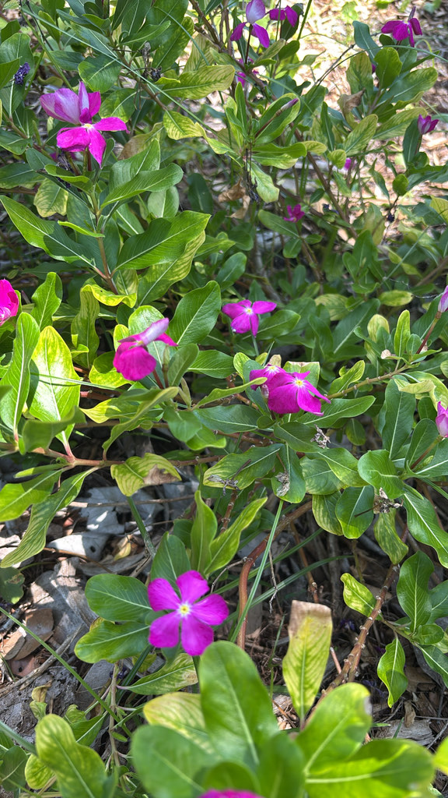

- One of the most medically significant plants in the world — the source of vincristine and vinblastine, chemotherapy drugs used against leukemia and Hodgkin's lymphoma.
- A pharmaceutical powerhouse that is nonetheless toxic to eat, in every part. For admiring, not ingesting.
- Genuinely native to Madagascar — the name is accurate — though it has naturalized so widely across the tropics that many assume otherwise.
- Blooms nearly year-round in Florida, and ranks among the more heat and drought tolerant flowering plants available.
Non-native. Native to Madagascar, where the genus Catharanthus is almost entirely endemic — the common name is apt. Naturalized widely across the Caribbean and the tropics. Member of Apocynaceae — the dogbane family, same as oleander and plumeria.
- Madagascar Periwinkle is one of the most medically important plants in the world. Two alkaloids extracted from it - vincristine and vinblastine - became frontline chemotherapy drugs, and vincristine in particular helped turn childhood leukemia from a near-certain death sentence into a largely survivable disease.
- The way those drugs were found is a textbook case of scientific serendipity. In the 1950s, researchers at Eli Lilly and the University of Western Ontario were studying the plant not for cancer but for diabetes — folk medicine in places like Jamaica and the Philippines held that it lowered blood sugar. It did not.
- What they noticed instead was that it suppressed white blood cells, a dead end for diabetes that proved to be exactly the property needed against leukemia.
- The same chemistry makes the whole plant toxic to eat: it is for admiring, not ingesting. The name, for once, is accurate — it really is from Madagascar, where its genus is almost entirely endemic. It simply naturalized so thoroughly across the tropics that many people assume it came from somewhere closer to home.
- One naming wrinkle worth knowing: gardeners still call it vinca, a holdover from its old classification as Vinca rosea. Taxonomists later moved it into its own genus, Catharanthus — Greek for ‘pure flower.’ The nursery trade kept the familiar name; botany uses the precise one.
- It is tough and unfussy - blooming in heat, drought, and poor soil with flat, five-petaled pinwheel flowers in white, pink, or rose, often with a contrasting eye - which is exactly why it is so widely planted, and why it sometimes escapes into disturbed ground.
- This common landscape border plant is one of modern medicine's quietest triumphs — a contrast made sharper by the threatened status of its wild ancestors in Madagascar. The species is among the most widely planted bedding plants on Earth, yet its native populations have declined under pressure from slash-and-burn agriculture and charcoal production.
- A plant you can buy at any garden center is, in its true home, far less secure than its global ubiquity suggests.
Bees, butterflies, and moths visit the flowers. The five-petaled flat face provides easy landing access. Reliable year-round bloomer that maintains pollinator activity through hot, dry periods when other plants stop.
Five flat petals forming a pinwheel, in white, pink, red, or lavender. A darker eye in the center. Produced nearly year-round.
Glossy, dark green, opposite, with a pale midrib. Evergreen.
Low, mounding, evergreen subshrub or annual, 1 to 2 feet tall. Freely branching.
The flat five-petaled pinwheel flowers in various colors, the glossy leaves with pale midribs, and the very long bloom season are the identification package.
Do not eat any part of this plant. It contains vinca alkaloids — vincristine and vinblastine, the same compounds used in chemotherapy — effective as measured drugs but harmful if swallowed casually.
All parts are toxic.
It's toxic to dogs and cats too (ASPCA), where it can cause vomiting, diarrhea, low blood pressure, and neurological symptoms. Keep pets away from the plant.


- © Beverly Burdette (CC-BY-NC), via iNaturalist
- © Franky McArthur (CC-BY-NC), via iNaturalist
- © Denise Sosa (CC-BY-NC), via iNaturalist
- © Ruby Meador (CC-BY-NC), via iNaturalist
- © Aiden Gitt (CC-BY-NC), via iNaturalist
- © Zailibeth Perez (CC-BY-NC), via iNaturalist
- © donyiyt (CC-BY-NC), via iNaturalist